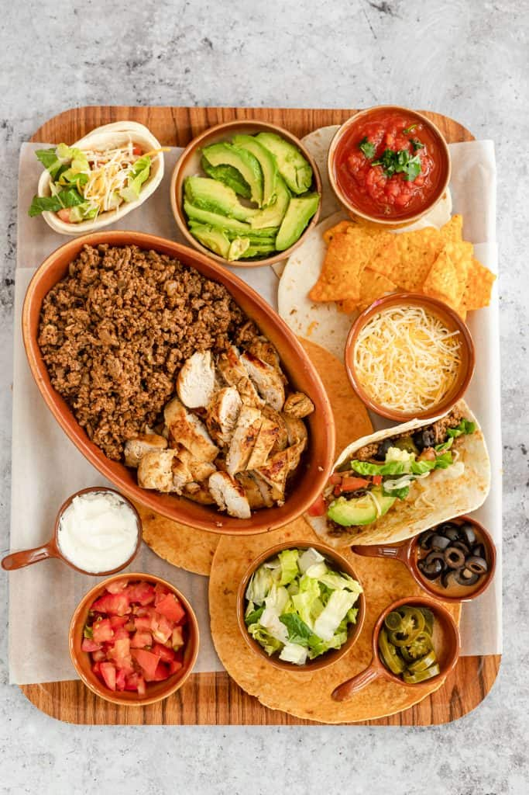
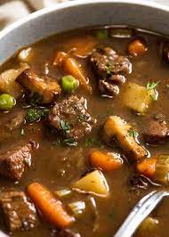

Okonomiyaki
A Japanese savory pancake with a variety of flavors and textures, often served with okonomiyaki sauce, mayonnaise, and bonito flakes.
Ingredients:
- All-purpose flour
- Salt
- Sugar
- Baking powder
- Grated mountain yam
- Dashi (Japanese soup stock)
- Eggs
- Tenkasu (tempura scraps)
- Pickled red ginger (kizami shoga)
- Green cabbage
- Sliced pork belly
Instructions:
- Combine all-purpose flour, salt, sugar, baking powder, grated mountain yam, and dashi in a bowl to make the base batter.
- Add eggs and mix well.
- Stir in tenkasu, pickled red ginger, and shredded cabbage.
- Heat a non-stick pan or griddle over medium heat.
- Pour a ladleful of batter onto the pan.
- Add sliced pork belly on top if desired.
- Cook until the bottom is golden brown, then flip and cook the other side.
- Serve hot with okonomiyaki sauce, mayonnaise, and bonito flakes.
Tips and Techniques:
- Substitute grated regular yam if grated mountain yam is unavailable.
- Vegan dashi can be made using kombu (dried kelp) and dried shiitake mushrooms.
- Customize toppings according to preference, such as seafood, cheese, or vegetables.

Lasagna
An Italian dish with a layers of pasta, rich tomato sauce, creamy béchamel, and cheese, baked until golden and bubbly.
Ingredients:
- Extra virgin olive oil
- Ground beef chuck
- Onion
- Bell pepper
- Garlic
- Tomato sauce
- Tomato paste
- Crushed tomatoes
- Fresh oregano
- Fresh parsley
- Italian seasoning
- Garlic powder and/or garlic salt
- Red or white wine vinegar
- Sugarr
- Salt
- Dry lasagna noodles
- Cheese
Instructions:
- Saute ground beef, onions, bell peppers, and garlic.
- Stir in tomato sauce, tomato paste, crushed tomatoes, and seasonings. Simmer.
- Cook lasagna noodles and drain.
- Mix cheese with parsley.
- Preheat oven. Assemble layers. Repeat.
- Finish with meat sauce and cheese.
- Bake covered, then uncovered.
- Let it rest before serving.
Tips and Techniques:
- Use no-boil lasagna noodles for convenience.
- Substitute ground turkey or Italian sausage for beef.
- Make-ahead and refrigerate lasagna before baking.

Chicken Beef Taco
A seasoned ground beef and chicken, wrapped in a crispy taco shell. It is often garnished with fresh toppings like lettuce, tomatoes, cheese, and salsa
Ingredients:
- Lean ground beef
- Canned tomato sauce
- Taco spice mix
- Onion
- Chicken breasts
- Lime
- Garlic
- Olive oil
Instructions:
- For beef tacos, brown lean ground beef and sauté diced onions.
- Stir in canned tomato sauce and taco spice mix. Simmer.
- For chicken tacos, marinate chicken breasts in lime juice, crushed garlic, olive oil, and taco spice mix.
- Grill or pan-fry chicken until cooked through.
- Slice chicken and assemble tacos with desired toppings.
- Serve with tortillas.
Tips and Techniques:
- Adjust the amount of tomato sauce for desired sauciness in beef tacos.
- Marinate chicken for enhanced flavor.
- Experiment with various taco toppings like lettuce, tomatoes, cheese, and salsa.

Meatballs
Flavorful and tender meatballs. It is often made with a mixture of ground meats, breadcrumbs, and seasonings, served in various dishes or as appetizers with sauce.
Ingredients:
- Plain breadcrumbs
- Grated Parmesan
- Garlic powder
- Onion powder
- Italian seasoning
- Salt
- Pepper
- Eggs
- Whole milk
- Italian sausage
- Ground beef
Instructions:
- Preheat oven. Combine dry ingredients.
- Whisk eggs and milk. Add to dry ingredients.
- Mix in Italian sausage and ground beef.
- Shape into meatballs and place on a baking sheet.
- Bake until cooked through.
- Serve with marinara sauce or as desired.
Tips and Techniques:
- Brown meatballs for extra flavor.
- Freeze leftover meatballs.
- Customize seasoning to taste.

Beef Soup
A soup made with tender beef, potatoes, onions, and vegetables, simmered in a flavorful broth and seasoned with herbs and spices.
Ingredients:
- Yellow onion
- Garlic
- Olive oil
- Ground beef
- Russet potato
- Canned diced tomatoes
- Italian seasoning
- Black pepper
- Beef broth
- Worcestershire sauce
- Frozen vegetables
- Salt
Instructions:
- Saute onion and garlic.
- Add ground beef and brown.
- Stir in potatoes, tomatoes, seasonings, broth, and Worcestershire sauce. Simmer.
- Add frozen vegetables. Simmer.
- Season to taste.
Tips and Techniques:
- Add wine or beef bouillon for richer flavor.
- Freeze leftovers.